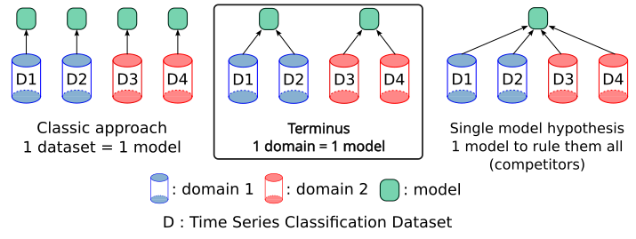
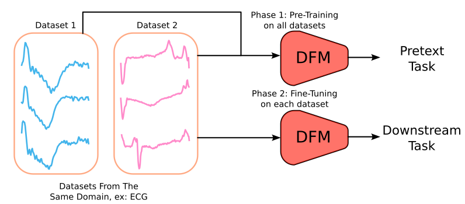

TERMINUS
Domain Foundation for
Time Series Classification
Project Objectives
- Develop domain-specific representations for time series classification across multiple application datasets
- Create comprehensive benchmark datasets and evaluation protocols for time series classification
- Design novel deep learning architectures tailored for temporal pattern recognition
- Establish transfer learning frameworks to reduce annotation costs in new domains
- Advance the state-of-the-art in few-shot and zero-shot time series learning
- Provide open-source tools and resources for the time series classification community
The Terminus project promotes the development of Domain Foundation Models in time series classification. Unlike general foundation models, which aim to capture patterns across multiple domains with a single architecture, Domain Foundation Models are designed to specialize in the unique characteristics of specific fields, as seen in the figure below. Each domain—whether it is healthcare, finance, or industrial monitoring—has distinct data distributions, feature patterns, and temporal dynamics that make a one-size-fits-all approach sub-optimal. By building foundation models tailored to each domain, we aim to leverage domain-specific knowledge and structures, ensuring better performance and generalization within those contexts. This approach acknowledges the inherent diversity of time series data across domains and seeks to develop models that are more robust and effective in their respective specialized applications. The goal of this project is to identify the core characteristics that define a Domain Foundation Model. These characteristics include pretext tasks for self-supervision, knowledge distillation, and test-time adaptation, among others. Our aim is to develop a flexible methodology that can be fine-tuned for specific models.

Our approach will also prioritize the efficiency of the models, with close monitoring of the computational cost involved in building them. As in our previous research, we will track the CO2 emissions associated with model development and thoroughly document the environmental impact of creating these models. Additionally, we will quantify the potential economic benefits, particularly in terms of reducing annotation requirements and shortening training times by fine-tuning from a domain foundation model rather than starting from scratch.
In the figure below we showcase an example setup of a Domain Foundation Model for time series classification in the healthcare domain ECG. The model is pre-trained on a large collection of healthcare time series datasets, capturing the underlying patterns and structures common to this domain. Once trained, the model can be fine-tuned on a specific ECG dataset for arrhythmia detection, leveraging the knowledge acquired during pre-training to improve performance and reduce the amount of labeled data required for effective classification.

Work Packages
WP1: Transfer within the domain
The primary objective of this first WP is to explore the existing methods in the literature on foundation models for time series, extending beyond just classification focused approaches. The second goal is to investigate the potential of utilizing some of these methods as domain specific foundation models, assessing their performance when repurposed as classifiers to determine whether knowledge transfer occurs across datasets within the same domain. Lastly, this WP aims to analyze this transfer by examining the latent feature space and model parameters, providing insights into how well these models generalize within a domain and whether their learned representations capture transferable knowledge.
WP2: Transfer to similar domains
In this WP, we will focus on transferring knowledge between domains rather than between datasets within the same domain. To achieve this, we will not use randomly selected domain pairs, instead, we will ensure that the chosen domains are similar. A key aspect of this WP will be defining what constitutes similarity between datasets from different domains, a topic that has been previously explored in transfer learning research for time series. The second part of this WP will involve training DFMs on a single domain and then fine-tuning them on a similar domain, comparing this approach to training a DFM directly on the target domain without any prior transfer. In the third part, we will explore the use of knowledge distillation to transfer knowledge from a pre-trained DFM on one domain to another DFM being trained on a different, yet similar, domain. This WP is specifically interested in cases where we have one domain with much less diversity and amount of data compared to another domain.
WP3: Test-Time Adaptation
This WP focuses on Test-Time Adaptation (TTA), a technique that enables a pre-trained model to adapt to test samples dynamically, especially when they come from a distribution different from the training data. TTA is particularly relevant for DFMs, as a model pre-trained on a specific domain may encounter new datasets within the same domain in the future, which may exhibit concept drift, a shift in the underlying data distribution compared to the training data. WP3 will explore various TTA techniques, first applying them to time series classification tasks where the train and test sets originate from the same dataset but differ in distribution. Then, these techniques will be tested on real-world domain shift scenarios for DFMs, assessing their effectiveness in improving model robustness and adaptability.
WP4: Frugal DFMs
In this final WP, our goal is to take the advancements from the previous three WPs and focus on reducing the complexity of the models in terms of (1) the number of parameters, (2) inference time, and (3) the number of Floating Point Operations per Second (FLOPs) (see Figure 5 that shows mean accuracy vs. FLOPS for major deep learning architectures for time series classification). This WP is crucial for real world applications, where users may have hardware limitations, particularly in terms of memory and computational resources. To address this challenge, we will explore two key approaches: post training quantization, which reduces model precision after training to optimize storage and efficiency, and pruning methods applied during training, which remove less important connections or parameters to create a more lightweight model. By implementing these techniques, we aim to make foundation models for time series more accessible and efficient for practical deployment. This WP is inherently transversal, as its tasks will be carried out throughout the project, leveraging developments from WP1, WP2, and WP3 to progressively refine model efficiency and deployability.
Time Series Classification